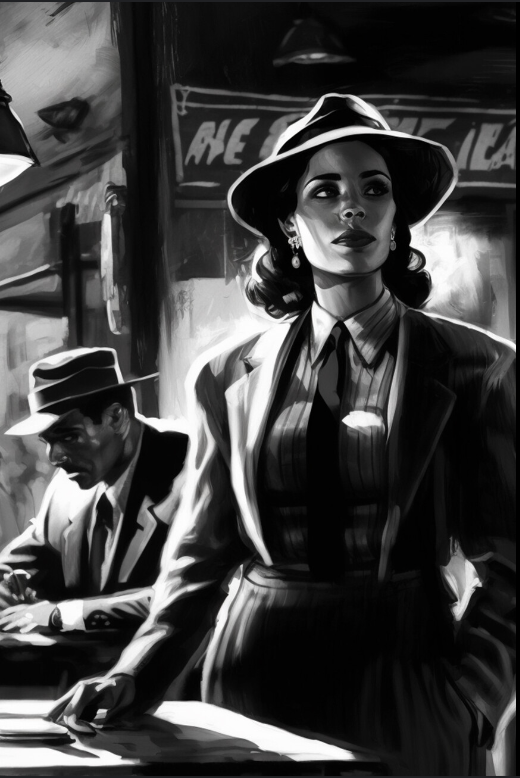

First, I’m going to use GPT to generate two fictional crimes. Then, I will head to Lmsys to compare Reka Core and Qwen Max’s approaches to solving these crimes.
Me to GPT: I am going to test two of my friends’ abilities to solve fictional crimes. I want to compare and contrast their ways of thinking. I want you to develop an extremely intricate fictional crime that takes multiple steps to work through and where two people could easily think differently.
THE FIRST FICTIONAL CRIME
A high-profile jewelry heist took place at the exclusive Rosette Mansion. A rare emerald necklace worth millions, known as “The Jade Serpent,” was stolen from a secure display case during a charity gala. The gala featured celebrities, politicians, and business tycoons, all mingling in an atmosphere of wealth and elegance.
Key Details:
Setting: The mansion is in a secluded area and is fully secured with surveillance cameras, alarms, and guards.
The Timeline:
7:30 PM: Guests start arriving. The necklace is in its display case.
8:15 PM: The mansion’s security reports a temporary power glitch, leaving a blind spot in camera coverage for 3 minutes.
8:20 PM: The host announces that the charity auction will start in 10 minutes.
8:30 PM: The host officially begins the auction. The necklace is still present.
9:00 PM: The mansion staff notice the necklace is missing and raise the alarm.
9:15 PM: Security footage shows that guests are still within the mansion. No one was seen leaving suspiciously during this period.
Suspects and Evidence:
The Celebrity Chef: Famous for his fusion cuisine, he was hired to cater the gala. He had access to various areas and brought a few assistants.
Alibi: Claims to have been supervising his team during the glitch, preparing the main course.
Evidence: An assistant chef saw the chef go to a private storage room during the power glitch, but no one checked on him.
The Politician’s Spouse: Attended with her influential partner but seemed more interested in networking.
Alibi: Was mingling with guests in the lobby.
Evidence: Security footage shows her near the display case around 8:30 PM.
The Art Dealer: A known collector with a passion for rare gems, they have a history of dubious dealings.
Alibi: Was watching the charity auction from a private balcony.
Evidence: His assistant claims the dealer left briefly around 8:20 PM to make a call.
The Host’s Business Partner: They were tasked with managing the charity auction and ensuring security.
Alibi: Coordinating with the auctioneer, managing bids, and handling logistics.
Evidence: Some guests reported seeing them appear agitated during the power glitch.
The Challenges:
The Missing Window: The brief blackout offers a small window for someone to open the display and take the necklace.
Conflicting Accounts: Witness testimonies differ, creating confusion about suspect movements.
The Red Herrings: Various pieces of evidence can easily lead to false conclusions, such as a similar-looking but worthless necklace being planted in the storage room.
Comparing Perspectives:
Friend 1: Could focus on the politician’s spouse, noting her position near the display case, or suspect the chef based on his access.
Friend 2: Might pursue the art dealer, given his history, or scrutinize the business partner for potential insider assistance.
I told GPT to give more information and ensure that there was an answer, so that, at the end, we can assess the two LLMs against each other. I fed all this information to the LLMs, and then asked them to write a one page report about what happened, and how they got to their conclusion.
Reka
Report: Solving the Rosette Mansion Jewelry Heist
Objective: To analyze all available evidence, interview suspects, and determine the prime suspect responsible for the high-profile jewelry heist at the Rosette Mansion, in which the rare emerald necklace “The Jade Serpent” was stolen during a charity gala.
Methods:
- Examined the crime scene and timeline.
- Reviewed suspect profiles and alibis.
- Investigated additional evidence.
- Analyzed additional clues.
- Reviewed suspects and clues to form a hypothesis.
Conclusion:
Based on the evidence and analysis, the prime suspect is the Art Dealer. Here’s the step-by-step reasoning:
- The power glitch during the gala created a crucial blind spot in camera coverage, coinciding with the necklace’s disappearance.
- The Art Dealer has a strong motive, given his passion for rare gems and history of alleged art smuggling.
- His unexplained absence from the auction coincides with the power outage.
- His assistant testified that the dealer “always checks the time” before making a significant acquisition, suggesting he may have orchestrated the power glitch to steal the necklace.
- The Chef’s proximity to the storage room and his fingerprints on the wine bottle place him as the most likely suspect for disabling the security system.
- The Business Partner’s sighting near the security room and unaccounted-for keys suggest involvement in the security system tampering, possibly assisting the Art Dealer.
Considering these findings, the Art Dealer is the most likely suspect for stealing “The Jade Serpent.” Further investigation, including analyzing the Art Dealer’s phone records and comparing the fake necklace and the stolen necklace, should confirm this hypothesis and bring the perpetrator to justice.
Qwen
Case Report: The Jade Serpent Heist at Rosette Mansion
Summary The theft of the multimillion-dollar “Jade Serpent” necklace during a charity gala at the Rosette Mansion necessitated a meticulous investigation into the high-profile attendees. Through careful analysis of the crime scene, alibis, and evidence, it has been determined that the Host’s Business Partner is the primary suspect in the heist.
Investigation Steps and Findings
Scene Examination and Initial Analysis: The crime scene was secured, and initial examination revealed a power glitch that coincided with the theft, creating a crucial blind spot in the surveillance. The necklace’s disappearance occurred within this timeframe.
Suspect Profiling and Alibi Verification: Four primary suspects emerged: the Celebrity Chef, the Politician’s Spouse, the Art Dealer, and the Host’s Business Partner. Each had potential motives and opportunities but also presented alibis.
Physical and Video Evidence Review: Close scrutiny of video footage and physical clues led to the discovery of the chef’s fingerprints on a wine bottle near the storage room connecting to the display room, the politician’s spouse’s suspicious behavior near the display, the art dealer’s burner phone, and the business partner’s possession of unaccounted keys and proximity to the security room during the power glitch.
Financial and Background Checks: The business partner’s recent financial troubles stood out as a compelling motive, while background investigations into the other suspects did not reveal equally pressing motives or direct connections to the theft.
Reevaluation with Additional Information: The discovery of the fake necklace in the storage room and the security logs indicating an attempted alarm disablement requiring a master key significantly implicated the Host’s Business Partner. His presence near the security room and possession of keys that were not part of the regular staff’s inventory pointed to inside involvement.
Motive, Means, and Opportunity Alignment: The Business Partner had the strongest alignment of motive (financial distress), means (access to critical areas via the keys), and opportunity (being near the security system during the power outage).
Conclusion
Based on the comprehensive investigation, it is concluded that the Host’s Business Partner is the prime suspect in the theft of “The Jade Serpent.” The combination of his financial difficulties, access to the security system, and suspicious activities during the critical timeframe strongly suggests his involvement. It is recommended to involve law enforcement to execute a search warrant on the Business Partner’s properties, seize any relevant financial records, and further investigate his actions during and after the gala. Additionally, inquiries should be made into potential accomplices or methods of disposal for the stolen necklace. This thorough approach ensures a just resolution and the recovery of the priceless artifact.
Review
Reka thinks the Art Dealer did it and Qwen thinks the Business Partner did it. In Reka’s report, they state that it was likely that the Chef and Business Partner helped out in the finessing of the Jade Serpant, and its analysis definitely seems more wishy-washy. I feel like Qwen does a much better job at narrowing it down and it creates, almost, an “Expected Value” or probability approach to get to the answer. Typical AI.
Since I told GPT to create an answer, which ended up being the Business Partner, by using the fake necklace to replace the real one. He used his master key to tamper with the security system, causing the power glitch to facilitate the switch. However, his nervous behavior and the unaccounted-for keys offer clear signs of guilt. But the assistant chef’s testimony about the celebrity chef leaving for the storage room and the art dealer’s use of a burner phone could implicate them due to their plausible motives and access.
So based on this, it seems like Qwen got to the correct suspect, but was more narrow-minded that others could have been involved. Reka didn’t get to the right suspect but did correctly assume that the suspect very likely used assistance. Let’s see GPT’s judgment:
Report 1 Analysis:
The first report on the Rosette Mansion heist identifies the Art Dealer as the prime suspect by laying out a logical argument based on the known timeline, motives, and circumstantial evidence. It notes that the power glitch coincided with the necklace’s disappearance and uses the art dealer’s absence during that timeframe as crucial evidence. The dealer’s penchant for rare gems and his prior involvement in smuggling allegations bolster the report’s conclusion that he orchestrated the theft. His assistant’s testimony about “always checking the time” suggests meticulous planning, and the burner phone points to secretive behavior.
However, the report leaves several gaps in its reasoning. It does not establish a direct connection between the art dealer and the tampering of the security system, relying instead on speculative assumptions regarding possible collusion with the business partner. The fingerprints of the Chef on the wine bottle are mentioned but not deeply investigated, potentially obscuring crucial clues. Moreover, the business partner’s involvement near the security system, along with unaccounted-for keys, could have been explored further, especially given his financial troubles. This oversight leaves open the possibility that other suspects may have played a more prominent role than the report concludes. Despite these gaps, the analysis is generally well-structured and plausible, providing a solid interpretation of the available evidence.
Score: 42.75/50
Report 2 Analysis:
The second report offers a more comprehensive analysis, focusing on the Host’s Business Partner as the mastermind of the heist. It recognizes the power glitch as a critical window and scrutinizes the business partner’s proximity to the security room during this period. His possession of unaccounted-for keys and suspicious behavior near the alarm system imply direct involvement in tampering with the security system. Furthermore, the partner’s financial troubles provide a compelling motive, suggesting desperation to cover recent investment losses. This is corroborated by background checks, adding weight to the hypothesis.
In addition to profiling the suspects, the report thoroughly examines physical and video evidence, revealing the chef’s proximity to the storage room and the fingerprints on the wine bottle, the art dealer’s use of a burner phone, and the politician’s spouse’s suspicious glances near the display. While each suspect had potential motives and opportunities, the business partner’s alignment of motive, means, and opportunity stands out clearly. The attempted alarm disablement requiring a master key implicates the business partner directly. The analysis is well-reasoned and cohesive, but further exploration into accomplices could strengthen the conclusion. The Chef and Art Dealer both had access and motive, suggesting that additional parties may have been involved. Despite this, the logical chain of evidence remains solid.
Score: 47.25/50
Seems like GPT’s judgment was pretty closely aligned with mine, but it clearly put a more heavy emphasis on correctly identifying the suspect than that there were supporting actors in this, which does make sense.
THE SECOND FICTIONAL CRIME
The Case of the Fractured Fortune
At the annual board meeting of the prestigious Starkweather Corporation, a sudden explosion caused structural damage to the executive conference room. Although no one was injured, the blast resulted in the loss of vital corporate documents, halted the company’s ambitious merger plans, and caused the company’s stock to plunge by 30%. Investigators determined that the explosion was caused by tampering with the heating system, leading to a gas leak that ignited when the system was switched on.
Key Details:
Setting: The Starkweather Corporation’s headquarters is a state-of-the-art skyscraper equipped with robust security features like surveillance cameras and badge-controlled access.
Timeline:
6:00 PM: The last board members leave after the meeting concludes. The room is locked, and the cleaning staff begins their work.
7:30 PM: The building’s heating system activates due to a drop in temperature.
7:45 PM: The explosion occurs, damaging the executive conference room and several adjacent offices.
8:00 PM: Emergency services arrive, and the building is evacuated.
Suspects and Evidence:
The CFO: Responsible for overseeing the company’s finances, he stands to gain from the merger but was known to be critical of it.
Alibi: Claims to have left at 6:15 PM after the meeting.
Evidence: His keycard accessed the executive conference room at 6:30 PM, shortly before he left the building.
The CTO: Responsible for managing the corporation’s infrastructure and skeptical of the merger’s tech implications, he could gain influence by preventing it.
Alibi: Attended an IT team meeting until 7 PM.
Evidence: Security footage shows him in the basement around 6:45 PM, near the building’s heating system.
The Union Representative: Has consistently opposed the merger, arguing that it would lead to widespread layoffs.
Alibi: Left the building by 5 PM to attend a labor meeting.
Evidence: Witnesses reported seeing him talking to maintenance staff before the meeting and holding blueprints of the building.
The VP of Operations: Stands to lose the most if the merger goes through due to a restructuring plan that could eliminate her role.
Alibi: Was on a video conference call until 6:30 PM.
Evidence: Her personal items were found in the boardroom, suggesting she was present after the meeting ended.
Challenges:
Conflicting Timelines: Some witnesses reported seeing the Union Representative after his supposed departure, while others reported seeing the CFO much later than his stated departure time.
Access Logs: Multiple keycards accessed the building’s basement and heating system area between 6 PM and 7 PM.
Solution: The CTO sabotaged the heating system to prevent the merger, which he felt would compromise the company’s technological integrity and influence his role. He used his access to the basement to tamper with the system and trigger the explosion. The CFO’s keycard access and the VP’s personal items were planted to frame them, while the Union Representative was an easy scapegoat due to his opposition to the merger. The CTO’s appearance in the basement, combined with his skepticism about the merger, ultimately revealed his involvement.
This time, I pitted Command R+ and Zephyr against each other.
Command R+
Case Report: Unraveling the Starkweather Corporation Explosion
Executive Summary:
On the evening of [date], an explosion rocked the executive conference room of the Starkweather Corporation, a prestigious company headquartered in a bustling business district. While the incident caused structural damage and disrupted ambitious merger plans, my investigation revealed a deliberate act of sabotage. This report outlines the key steps and evidence leading to the identification of the prime suspect.
Prime Suspect: The CTO
Through meticulous analysis, the Chief Technology Officer (CTO) emerges as the prime suspect in this intricate case. The motive centers on the CTO’s staunch resistance to the potential merger due to anticipated technological challenges and concerns. With a strong desire to protect the company’s technological autonomy, the CTO had the most apparent motive among the suspects.
Steps to Uncovering the Truth:
- Initial Assessment:
- Four primary suspects emerged: the CFO, CTO, Union Representative, and VP of Operations, each with varying motives and opportunities.
- Motive and Opportunity Inspection:
- CFO: While initially supportive, recent criticisms and his presence during the key timeframe were suspicious.
- CTO: Known resistance to the merger, presence near the heating system, and concerns in emails pointed towards a strong motive and opportunity.
- Union Representative: Vocal opposition to protect jobs, but conversations with staff and blueprints could be standard procedure.
- VP of Operations: Standing to lose the most, her left-behind personal items suggested a potential alibi setup.
- Timeline Reconstruction:
- 6:00–6:30 PM: CFO, VP, and janitorial staff present. Heating system adjusted, providing a potential tampering opportunity.
- 6:30–7:00 PM: CTO spotted near the heating system, coinciding with CFO’s claimed departure.
- 7:30 PM: Heating system activation.
- 7:45 PM: Explosion, indicating tampering during the prior hour.
- Evidence Analysis:
- Security Footage: CFO’s departure supported his alibi. CTO’s presence near the heating system was pivotal.
- Keycard Access: CFO’s access to the conference room was noteworthy.
- Emails: CTO’s concerns aligned with resistance motives.
- Maintenance Reports: Union Rep’s actions required further context.
- Establishing Probable Cause:
- CFO: Changing merger stance, access, and departure time as probable cause.
- CTO: Resistance, opportunity, and expressed concerns established strong probable cause.
- Union Rep: Motive was clear, but further evidence was needed for probable cause.
- VP: Strong personal motive and potential alibi manipulation established cause.
- Interview and Interrogation Insights:
- CFO Interviews: His shifting views and precise activities during the critical timeframe were probed.
- CTO Interviews: Confronted with security footage evidence and questioned about interactions with other suspects.
- Union Rep Interviews: Inquired about conversations with janitorial staff and the purpose of the blueprints.
- VP Interviews: Explained the presence of her personal items and potential motives for framing others.
Conclusion:
After a comprehensive investigation and careful consideration of the evidence, the CTO remains the prime suspect in the Starkweather Corporation explosion. His resistance to the merger, presence near the heating system, and expressed concerns provide a compelling case.
While the CFO, Union Representative, and VP of Operations cannot be entirely ruled out, the weight of evidence and motives suggests that the CTO had the strongest incentive and opportunity to commit the act of sabotage.
Further investigative steps may include a detailed forensic analysis of the heating system, additional witness interviews, and a deeper dive into the CTO’s digital footprint to solidify the case and bring the perpetrator to justice.
Zephyr
Title: The Case of the Fractured Fortune - Investigation Summary
Overview:
An explosion in the executive conference room of the Starkweather Corporation caused structural damage to the room and adjacent offices, resulting in the loss of vital corporate documents and a 30% plunge in the company’s stock price. The explosion was triggered by tampering with the heating system, which led to a gas leak that ignited when the system was turned on.
Suspects and Evidence:
- The CFO: Profiled as a supporter of the merger, but historically had concerns. Keycard accessed the conference room at 6:30 PM, and surveillance footage captured him leaving the building at 6:45 PM.
- The CTO: Responsible for the company’s tech infrastructure, he opposed the merger due to potential tech integration challenges. Security footage showed him in the basement around 6:45 PM, near the heating system.
- The Union Representative: Vocally opposed to the merger over job security concerns. Maintenance staff reported seeing him conversing with janitors and holding blueprints of the building.
- The VP of Operations: Responsible for overseeing company operations, she stands to lose her job due to a restructuring plan. Her personal items were found in the conference room after the meeting ended.
Analysis of Suspects:
- The CFO: His keycard accessed the conference room at 6:30 PM, and he left the building at 6:45 PM, suggesting he may have entered the room and left quickly, possibly to set up the explosion.
- The CTO: He was seen in the basement near the heating system at 6:45 PM, indicating he had the opportunity to tamper with the heating system.
- The Union Representative: He was seen with blueprints of the building, implying knowledge of the building’s layout, but he claimed to have left the building at 5 PM, which contradicts the timeline of the explosion.
- The VP of Operations: Her personal items were found in the conference room after the meeting ended, suggesting she was present afterward. However, there’s no direct evidence linking her to the explosion.
Conclusion:
Based on the analysis and evidence, the prime suspect is the CTO. His presence in the basement near the heating system at 6:45 PM provides a strong opportunity to tamper with the heating system. Additionally, his opposition to the merger due to potential tech integration challenges provides a clear motive.
Next Steps: To confirm the hypothesis, the following investigative steps should be taken:
- Analyze the CTO’s email and communication records to determine if he communicated with anyone about the merger or the heating system.
- Interview the janitorial staff and maintenance workers to see if they noticed anything suspicious or if they saw the CTO in the basement or the conference room around the time of the explosion.
- Review the security footage to see if there’s any additional footage of the CTO in the basement or the conference room.
By conducting these additional investigations, we should be able to gather more evidence and confirm the CTO as the culprit.
Review
They both got to the correct suspect, but let’s see how GPT judges their approaches.
Analysis of the First Report:
Correctness and Validity:
- Prime Suspect Identification: The report identifies the CTO as the primary suspect based on a strong motive rooted in his resistance to the merger and his concerns over technological changes. His presence near the heating system and the concerns expressed in his emails are convincing evidence that aligns well with the stated motive.
- Comprehensive Analysis of Evidence: The report details the timeline of suspect movements, especially focusing on the crucial period when the heating system was tampered with. The reconstruction of the timeline provides a logical framework that shows the CTO had both the opportunity and means to cause the explosion.
- Thorough Assessment of Other Suspects: The analysis accounts for the CFO’s shifting stance on the merger, the Union Representative’s vocal opposition, and the VP’s potential alibi manipulation. Each suspect is considered, strengthening the focus on the CTO as the most likely culprit due to the corroborating evidence.
Logical Gaps or Weaknesses:
- Insufficient Elimination of Other Suspects: While the CFO, Union Representative, and VP are discussed in terms of their motives and opportunities, their involvement isn’t definitively ruled out. The CFO’s keycard usage and the VP’s personal items suggest some level of involvement that is not fully clarified.
- Over-Reliance on Circumstantial Evidence: The evidence linking the CTO to the crime is circumstantial, relying primarily on his presence and opposition to the merger. A deeper exploration of physical or digital evidence tying him directly to the tampering could have strengthened the case.
Conclusion Validity:
The conclusion that the CTO orchestrated the sabotage is well-reasoned based on the combination of motive, opportunity, and circumstantial evidence. However, a more definitive link through forensic analysis would have bolstered the conclusion. The overall structure and thorough analysis make this a compelling report.
Score: 45.50/50
Analysis of the Second Report:
Correctness and Validity:
- Prime Suspect Identification: The report accurately identifies the CTO as the prime suspect due to his presence in the basement around the time of the explosion. His opposition to the merger, which posed tech integration challenges, provided a clear motive for sabotage.
- Timeline and Evidence Analysis: The timeline aligns the CTO’s presence in the basement near the heating system at a crucial moment with the tampering of the system. The analysis of other suspects effectively considers each one’s motives and opportunities, such as the CFO’s conference room access and the Union Representative’s knowledge of the building layout.
- Logical Structure: The report presents a logical progression from suspect profiling to evidence analysis and builds a compelling argument against the CTO. It also considers each suspect’s alibis and potential connections to the explosion.
Logical Gaps or Weaknesses:
- Circumstantial Evidence: While the CTO is the most plausible suspect, the evidence remains circumstantial, relying heavily on his opposition to the merger and presence in the basement. Direct forensic or digital evidence tying him to the tampering is still required.
- Inconclusive Elimination of Other Suspects: The analysis doesn’t fully rule out the other suspects, particularly the CFO, whose quick entry and exit from the conference room could indicate involvement. The Union Representative’s possession of blueprints is suspicious, but not explored in-depth.
Conclusion Validity:
The conclusion that the CTO is the prime suspect is reasonable based on his presence near the heating system and clear opposition to the merger. The steps outlined for further investigation are practical and would likely strengthen the case. Despite some reliance on circumstantial evidence, the report is cohesive and clearly points to a plausible theory.
Score: 46.00/50
This seems like it was a pretty fair matchup. Their strengths pretty much mirrored each other, as did the logical gaps/weaknesses. But GPT decided that Zephyr’s process was just a little bit better.
